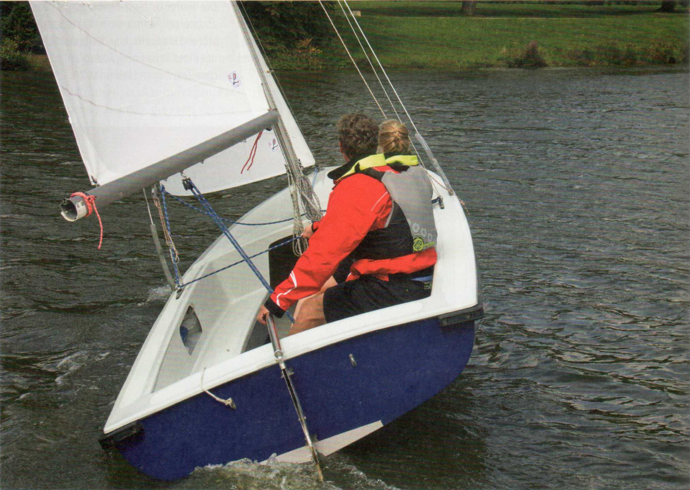
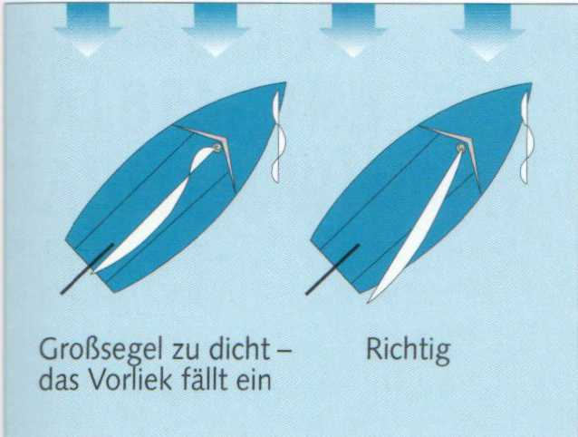
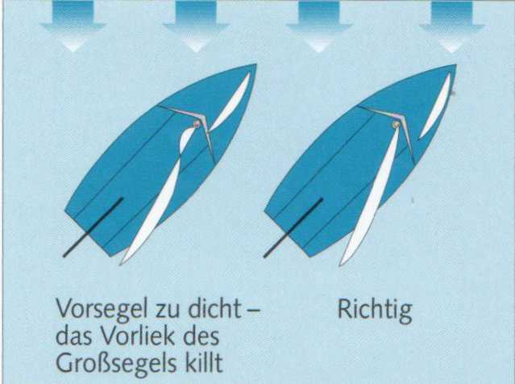
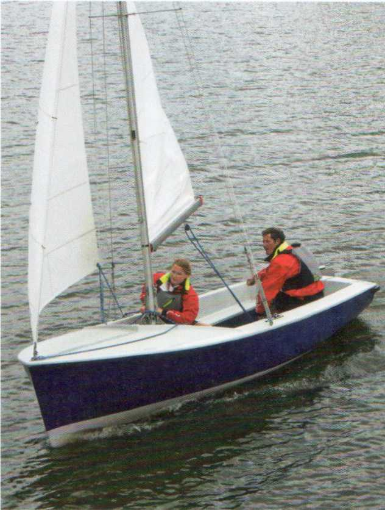
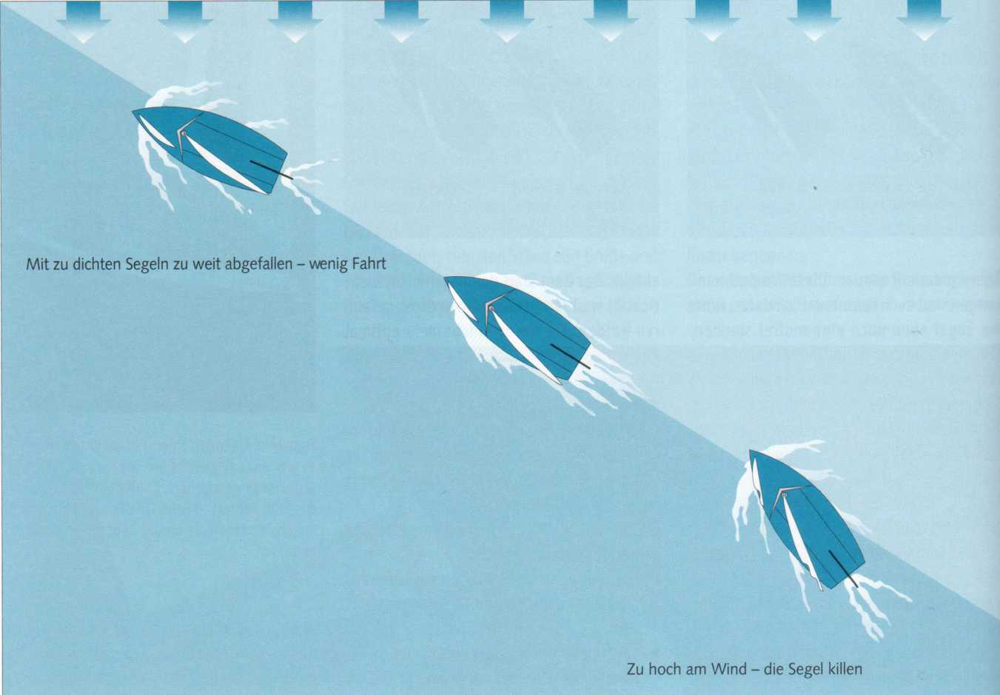

Ein Bild, das man auf fast jedem Revier beobachten kann: Zwei Boote segeln annähernd am Wind. Während eins davonzieht, scheint das andere geradezu auf dem Wasser zu kleben. Der Grund ist meist immer derselbe: zu dicht gefahrene Segel. Der Am-Wind-Kurs
verlangt ein hohes Maß an seglerischem Fingerspitzengefühl. Die richtige Segelstellung muss ausprobiert werden.
Man holt den Großbaum so weit dicht, dass sein Ende, die Nock, etwa über Ecke Heck steht. Jetzt sich vorsichtig so hoch an den Wind herankneifen, bis das Vorliek des Großsegels zu killen beginnt - in diesem Fall leicht nach Luv einfällt. Dann gerade so weit abfallen, dass diese Erscheinung wieder verschwindet. Nun den Stand von Groß- und Vorsegel miteinander in Einklang bringen. Das Vorsegel so dicht holen, dass der Abwind das Großsegel im Vorliekbereich nach Luv beutelt. Dann die Vorschot behutsam fieren, bis die Falten oder Beutel wieder verschwinden. So sind die Segel für den Am-Wind-Kurs optimal getrimmt.
Hat man die ideale Einstellung von Vor- und Großsegel zueinander gefunden, möglichst nicht mehr mit den Schoten arbeiten, sondern kleinen Richtungsänderungen des Windes durch leichte Kurskorrekturen mit dem Ruder begegnen.

Denn da der Wind in seiner Richtung meist etwas schwankt, muss das Herankneifen häufiger wiederholt werden. Diese Windschwankungen sind auch verantwortlich dafür, wenn die Segel eben noch einwandfrei standen, plötzlich aber das Achterliek des Vorsegels anfängt zu killen, ohne dass man seinen Kurs geändert hätte. Der Wind hat geschralt. Um nicht im Wind stehen zu bleiben, sofort entschlossen abfallen, bis die Segel erneut voll stehen.


Aber nicht nur die Richtung des Windes schwankt, sondern auch die Windstärke. Wind besteht meist - zumindest auf Binnenrevieren - aus einer Folge mehr oder minder stark ausgeprägter Böen. Beim Einfallen einer Bö aber räumt der Wind, und zwar aus folgendem Grund: Der sprunghaft anwachsende wahre Wind bewirkt nicht sofort auch eine Erhöhung der Bootsgeschwindigkeit und damit des Fahrtwindes, weil die Masseträgheit des Bootes erst überwunden werden muss. Also fällt der scheinbare Wind zunächst achterlicher ein als bisher. Nimmt dann der Fahrtwind zu, weil das Boot schneller wird, nimmt auch der scheinbare Wind zu und kommt vorlicher. Er schralt wieder.
Man läuft am Wind wie an einer unsichtbaren Grenzlinie entlang. Versucht man, über sie hinaus anzuluven, beginnen die Segel zu killen und das Boot läuft nicht mehr. Das merkt man natürlich sofort.
Kaum bemerkt wird jedoch von einem nicht so erfahrenen Steuermann, wenn er zu weit abfällt. Das Boot läuft dann auch nicht mehr richtig, weil jetzt die Segel zu dicht gefahren werden. Sie werden nicht mehr optimal angeströmt. Im Gegenteil: Es kommt zu einer fahrthemmenden Verwirbelung der Luftströmung am Segel.
Eine gute Orientierungshilfe ist in diesem Fall der Verklicker auf dem Masttopp. Er sollte immer genau parallel zum Kopfbrett des Großsegels stehen.
Einem Raumen des Windes kann man auf zweierlei Weise begegnen:
Grundsätzlich gilt:
Am Wind ist die seitliche Abdrift am größten. Ihr entgegen wirkt das Schwert. Deshalb muss es auf Am-Wind-Kurs vollständig gefiert werden.
Wird das Schwert auf diesem Kurs aufgeholt, rutscht das Boot zur Seite weg, aber die Krängung wird geringer, weil dem Winddruck auf die Segel nur ein geringer Gegendruck des Lateralplans gegenübersteht. Daraus resultiert:
Bei starker Krängung verringert sich ebenfalls die Lateralfläche durch die starke Neigung des nur noch teilweise eingetauchten Schwertes und Ruderblattes. Dies macht deutlich, wie auf ballastlosen Schwertbooten Abdrift und Krängung in besonderem Maße voneinander abhängig sind. Das zeigt sich auf keinem Kurs so stark wie auf dem Am-Wind-Kurs.

Typischer Anfängerfehler: Der Steuermann achtet zu sehr auf seinen Kurs und die Fock. Das Großsegel ist zu weit gefiert. Es killt und bremst, das Boot verliert an Fahrt. Die Großschot muss angeholt werden, damit das Boot wieder Fahrt aufnimmt.

Die richtige Sitzposition von Steuermann und Vorschoter hängt von den Windverhältnissen ab.
► Leichter Wind: das Gewicht vor die Bootsmitte verlagern.
Dadurch kommt das breite Unterwasserschiff hinten etwas aus dem Wasser. Der Spiegel kann sich nicht festsaugen, und die Reibungswiderstand erzeugende benetzte Oberfläche wird kleiner.
► Kräftiger Wind: Die Crew konzentriert ihr Gewicht ungefähr im zweiten Drittel der Bootslänge.
So wird das Vorschiff entlastet und kann die Wellen besser nehmen. Außerdem wirkt der auf diese Weise weiter nach achtern verlagerte Lateraldruckpunkt der Luvgierigkeit entgegen, die durch die stärkere Krängung zwangsläufig einsetzt.
Eine Jolle muss so aufrecht wie möglich gesegelt werden. Einmal, um die Abdrift so gering wie möglich zu halten. Zum anderen verringert sich bei Krängung, durch die seitliche Neigung des Riggs, die angestellte Segelfläche. Und das bedeutet: verringerte Fahrt.
Um aufrecht oder wenigstens nahezu aufrecht zu segeln, muss eine Jolle von ihrer Crew ausgeritten werden. Bei kräftiger Brise, indem sie sich weit heraushängt - oder der Vorschoter ins Trapez steigt. Bei weniger Wind, indem sie ihr Gewicht mehr zur Mittschiffsebene hin verlagert.